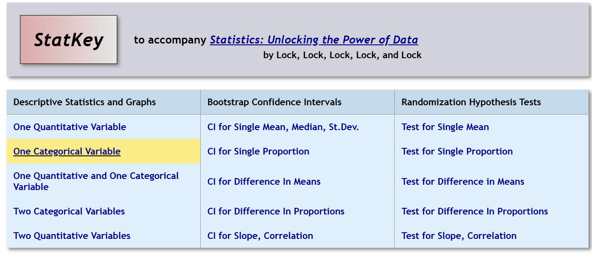
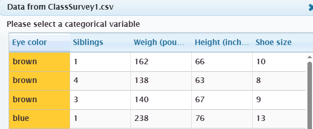
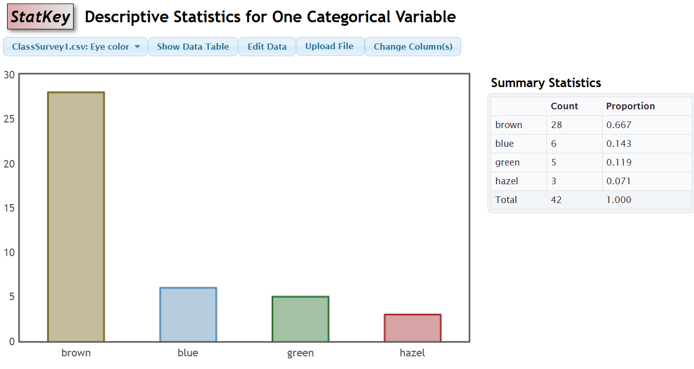
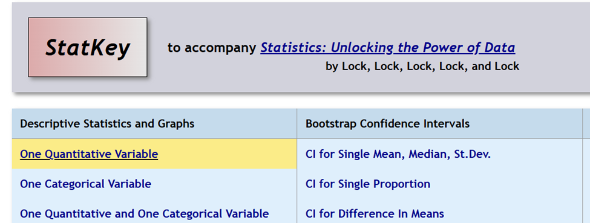
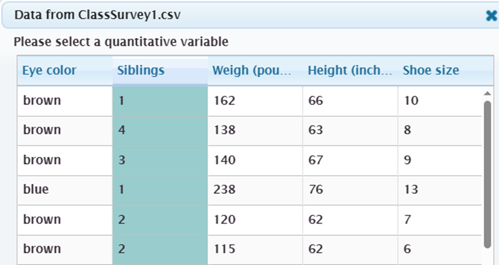
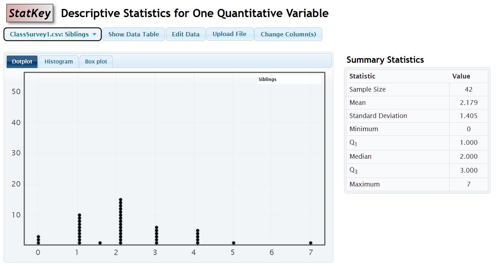
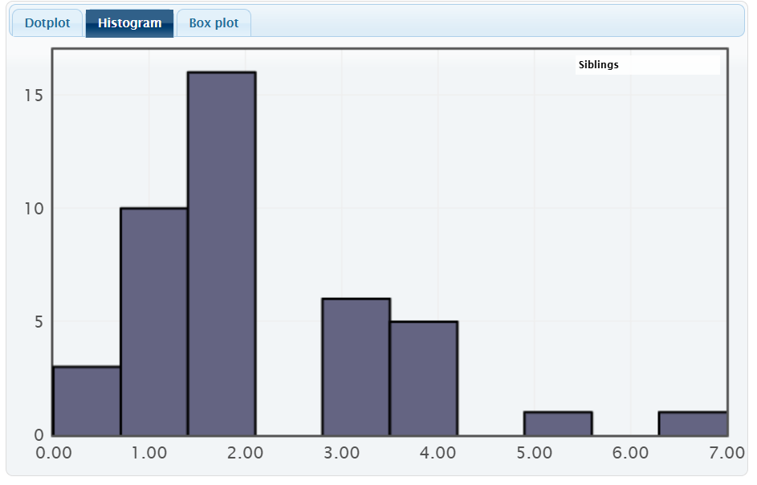
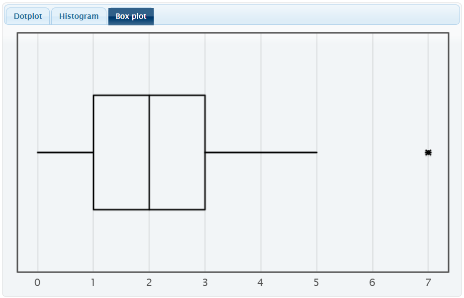

In this section we will focus on how to graph data with technology. We will be using StatKey which is an online statistical tool. The program has some pre-built data sets to explore and allows you to upload your own data from a csv spreadsheet.
We are going to investigate the variables found in the Class Survey 1 by graphing and interpreting the data.
Subsection2.5.1Graphing One Categorical Variable
First, we will explore student eye color which is a categorical variable. StatKey will construct a bar graph and frequency table for the eye colors.
Download the csv file ClassSurvey1.csv posted in Canvas and save to your computer where it is easily accessible. We are going to upload the data file to analyze the students eye colors.
Under the Descriptive Statistics and Graph column on the left, choose the One Categorical Variable.

Figure2.5.1.Image of StatKey menu
Click on the Upload File button and locate the data file on your computer and click open. Identify which variable you will analyze (Eye Color) and click OK near the bottom of the window.

The program constructs a bar graph and frequency table. The output image is below.

Figure2.5.2.Sample image of StatKey output.
Interpreting the Bar Graph
From the bar graph we can see that most students have brown eyes (28 students which represents 66.67% of the class) and hazel eyes occur the least often with just 3 students. From the frequency table we see the sample consisting of 42 UNC students. There are 6 students with blue eyes and 5 students with green eyes.
Checkpoint Using the eye color graph above, which of the following statements are correct? Select all that apply.
Checkpoint2.5.3.Interpreting information from a graph.
Using the graph above, select all true statements that apply to the eye color graph.
Brown eyes occur most often for these students.
Brown eyes is represented by the tallest bar.
Blue eyes occurred 14.3%
Take the frequency count and divide by the sample size for the percentage.
The sample size is 54 students.
Look at the total from the frequency table for 42 total.
The distribution is right skewed.
We do not discuss distribution shape with categorical data.
Sometimes discrete numerical data can be represented with a bar graph. But the order the data is listed is based on the order the data is read into the StatKey program. Click on the Change Column button and select the sibling data. Notice that the graph does not list them in numerical order, rather by the way the data was listed in the spreadsheet. If you click on the Show Data Table button it shows the data file. This is why we do not discuss skewness with categorical data, we can change the order the categories are graphed, and it changes the shape.
Subsection2.5.2Graphing One Quantitative Variable
In this section we will explore the number of siblings for these UNC students. This is a discrete quantitative variable (although one student claimed 1.5 siblings). StatKey will construct a dotplot, histogram, and boxplot for the data. StatKey will also create a Summary Statistics table identifying the sample size, mean, median, standard deviation, and the five-number summary.
Download the csv file ClassSurvey1.csv posted in the Data Set Chapter and save to your computer where it is easily accessible. We are going to analyze the numerical data.
Under the Descriptive Statistics and Graph column on the left, choose the One Quantitative Variable.

Figure2.5.4.Image of StatKey menu
Click on the Upload File button and locate the data file on your computer and click open. Identify which numerical variable you will analyze (Siblings) and click the OK button at the bottom right of the window.

The program will construct all three graphs and the summary table.

Figure2.5.5.StatKey Output of Sibling Dotplot
Interpreting the Dotplot: We can see there are three students with 0 siblings (minimum) and one student with 7 siblings (maximum). Most students have 1-3 siblings, with 2 siblings occurring most for 15 students. Recall each dot represents the number of siblings for that student, thus there are 42 dots to represent the sample size of 42 students. You can hover over a dot to display the value. The summary statistics table is on the right identifying the mean, median, and standard deviation.
If we click on the Histogram button we can see the histogram graph and the summary statistics table.

Figure2.5.6.StatKey Output of Histogram
Interpreting the Histogram: We can see the data is grouped into 10 bars (although we see just 7 since some intervals are empty). On the right side we can use the slider to change the number of bars for the histogram. Shift the slider left so you have 8 buckets. This is a better histogram. We can see that the histograms are right skewed since most values are on the left side with a few far to the right. A few larger values pull the mean to the right, thus right skewed.
Next, click on the Boxplot button to see the boxplot graph, also known as a box-and-whisker plot.

Figure2.5.7.StatKey Output of Boxplot
Interpreting the Boxplot: The boxplot displays the five-number summary. The box represents the quartiles Q1 = 1 sibling and Q3 = 3 siblings, with the middle line representing the median of 2 siblings. The whisker goes left to the smallest value of 0 and the right whisker to the largest value of 7 siblings. In this case, 7 siblings is an outlier as indicated by the star or asterisk. The summary statistics table identifies the values for the five-number summary.
Click on the Change Columns button to change variables. Weights and Heights are continuous quantitative variables. Investigate the shape of the graphs, where the center is represented, and how spread out the values are. Use the boxplot to check for outliers.
Subsection2.5.3One Categorical and One Quantitative Variable
Subsection2.5.4Graphing Two Categorical Variables
Subsection2.5.5Graphing Two Quantitative Variables
We are going to investigate if there is a relationship between a person’s height and his/her shoe size using the first day survey.
Open StatKey, under the left column Descriptive Statistics and Graph, select Two Quantitative Variables. Click on theUpload File button and find the saved data file ClassSurvey1 on your computer and click Open on the bottom right.
Identify the two quantitative variables, select the x-variable first, Shoe size, and then the y-variable, Height, and then click Ok at the bottom right.
The scatterplot shows each pair of points, such as size 10 shoe with the height of 66 inches, as (10,66). If we look at the pattern, we see a positive correlation. As the shoe sizes increase the student heights are also increasing. From the table the Correlation value is 0.913 which tells us this is a strong positive linear relationship, which also matches with the positive slope of 2.014. The scatterplot is scaled based on your values. If we extend the graph to shoe size 0, we get the y-intercept of 48.396 inches.
Figure2.5.8.Image of Scatterplot for Shoe Size and Height
If you click on the Switch Variables on the top right, you can switch the x-axis and y-axis. The correlation value will be the same 0.913 but the slope and y-intercept will change with the independent variable on the x-axis. We still have a positive slope which is now 0.414 and if we extend the graph to the height of 0 inches, we get the y-intercept of size -18.683. This scatterplot tells us that as the heights of the students increase, their shoe sizes tend to increase as well.
Figure2.5.9.Image of Scatterplot for Height and shoe size
If you click on the box Show Regression Line , the program will add the regression line to the scatterplot to help you make the predictions. Recall that the regression line is also know as the line of best fit since it minimizes the distances each point is to the regression line.